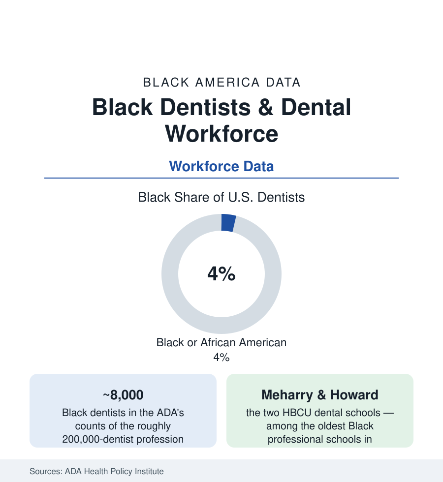

Black Employment
Black Dentists: Four Percent of the Profession That Owns Its Practices
Black dentists are about 4% of America's dentists — and dentistry remains the health profession where independent ownership is the norm. The ADA workforce data.

Dentistry holds a distinctive place in the health-workforce data: it is the profession where the practitioner still typically owns the practice — and Black dentists, at roughly four percent of the ADA's counted workforce, hold that ownership tradition through two of the oldest Black professional schools in the nation. The count is thin; the institutional story is deep — dentistry was among the first professions Black Americans entered at scale (Robert Tanner Freeman, the first Black American dentist, Harvard 1869, in the profession's own founding record) — and its present data join the oral-health file's access map to a workforce map of striking concentration. This article reads the dental profession's numbers.
The Pipeline: Two Schools and the Long Tail
The ADEA's applicant and enrollment data draw the funnel: Black students at roughly four to five percent of dental-school enrollments in the recent classes (with the applicant pool's conversion — the DAT scores, the science prerequisites, the shadowing hours the application presumes — the standard gates), and the historical concentration persisting inside the modern spread: Meharry Medical College's School of Dentistry (1886) and Howard's College of Dentistry (1881) — founded when the dental profession's doors were being built shut — still graduate a share of Black dentists far beyond their class sizes, their alumni networks staffing the National Dental Association (founded in its modern form in 1913 — the profession's Black institution through the whole segregated century, when the ADA's constituent societies barred the door the NDA answered). The specialty funnel (orthodontics, oral surgery, endodontics — residency-gated, the match data running thinner) and the faculty tier (the dental schools' Black faculty in the low single digits in the ADEA counts) repeat the gradient of every profession in this section, with dentistry's variation: the practice-ownership payoff at the funnel's end is the system's own property, not an employer's ladder — the economics that made the profession the Black professional class's historic stronghold in the cities section's business districts.
Practice Economics: Ownership, DSOs, and the Medicaid Line
The ADA Health Policy Institute's practice data describe a profession in structural transition whose terms sort by the usual variables: solo and small-group ownership still the modal form (the practice as the dentist's wealth asset — its sale the retirement plan, in the SCF's professional-wealth file), the dental service organizations (the corporate rollup tier) employing a rising share of new graduates of every race (the associateship replacing the buy-in for the debt-carrying young — the dental graduate's average educational debt in the high two-hundred-thousands in the ADEA senior surveys, the heaviest in the health professions after medicine), and the payer mix deciding practice geography (the Medicaid line: dentists' participation in Medicaid running below half nationally in the HPI data, the participating practices — disproportionately the community's own, in the access studies — carrying the oral-health file's entire safety net on their schedules). The Black practice's documented profile in the association and services data: more likely to locate in underserved areas, more likely to treat Medicaid and uninsured patients at volume, longer-tenured patient relationships — the access literature's dental chapter written by four percent of the profession.
The Wider Dental Team and the Access Frontier
The team around the dentist carries its own counts: dental hygienists (a profession over ninety percent women, its Black share in the mid single digits in the workforce data — the prevention workforce whose scope-of-practice expansion is the access era's policy instrument), dental assistants and the expanded-function tiers, the dental therapists of the frontier states (the mid-level provider model imported from the tribal health system — the profession's contested experiment, its early workforce drawn heavily from the communities it serves), and the school-based and public-health dentistry tier (the sealant and screening programs of the children's oral-health file). The research and policy front in the current data: the fluoridation debates' local rounds (the water file's dental front), the integration experiments (the primary-care dental screening, the dental home inside the medical home — the FQHC dental expansions of the safety-net data), and the workforce-shortage designations (the dental HPSAs mapping over the same counties as every other shortage map in this atlas).
Reading the Dental Data
Four percent of the dentists, two schools carrying the pipeline since the 1880s, and the profession's ownership economics making each practitioner an institution: dentistry is the health workforce's proof that a small count, compounded over a century of owned practices on named streets, builds a presence the percentage understates. The oral-health file's access map and this file's ownership map are the same streets. They were always going to be — the dentists built them that way.
More in Black Employment
The Black Unemployment Rate: The Two-to-One Pattern
Black unemployment runs at roughly twice the White rate — 5.5 percent against 3.3 percent in annual averages — a ratio stable across five decades of federal data. How it is measured and why it persists.
Black Median Weekly Earnings: The 80-Cent Ratio
Black full-time workers earn a median of about $900 a week — roughly 80 cents for every dollar White workers earn. The BLS earnings data by group, gender, and occupation.
Black Labor Force Participation: Working at National Rates
Black labor force participation runs at roughly the national rate — and Black women participate at higher rates than White women. The BLS participation data.
Source: American Dental Association Health Policy Institute; American Dental Education Association; National Dental Association; U.S. Bureau of Labor Statistics.